The Geometry
of Confidence
See which risks actually decide whether a project lands on time and on budget so you can act decisively ahead of time to mitigate them.
NASA Cost & Schedule Symposium · Glenn Research Center · LinkedIn Post
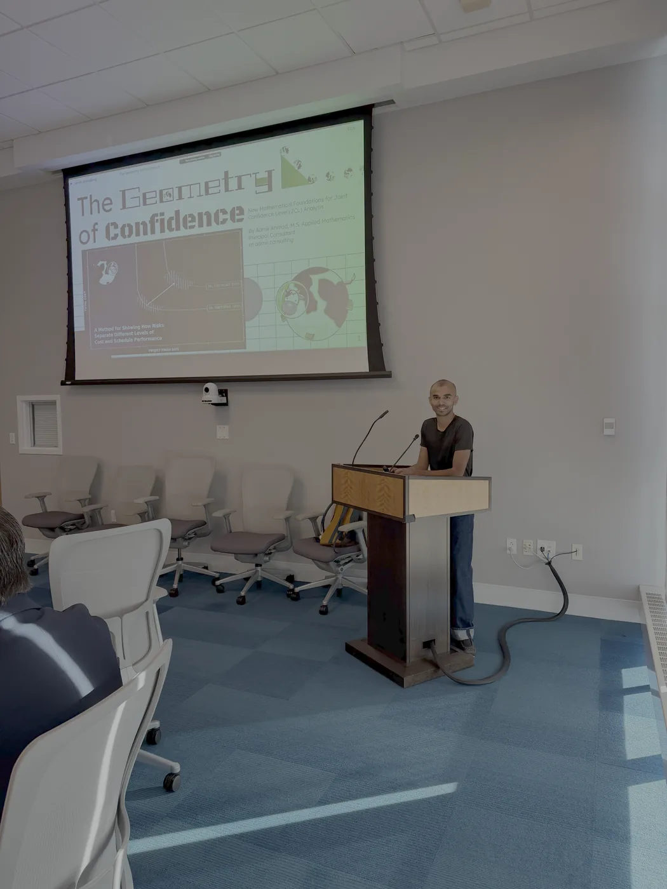
photo unavailable'">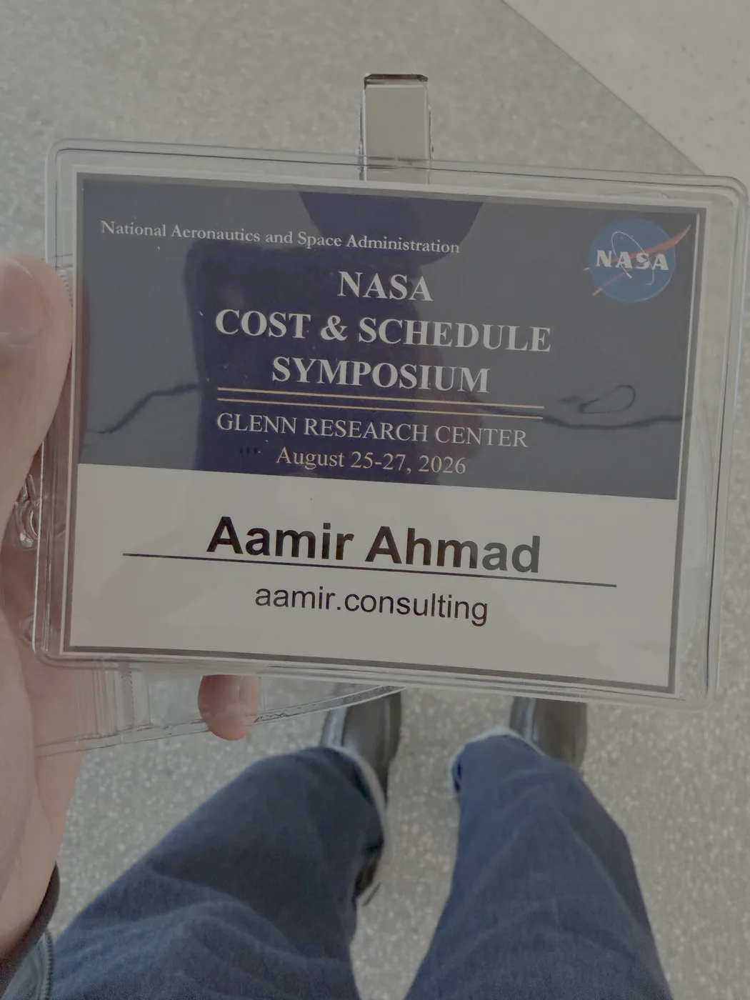
photo unavailable'">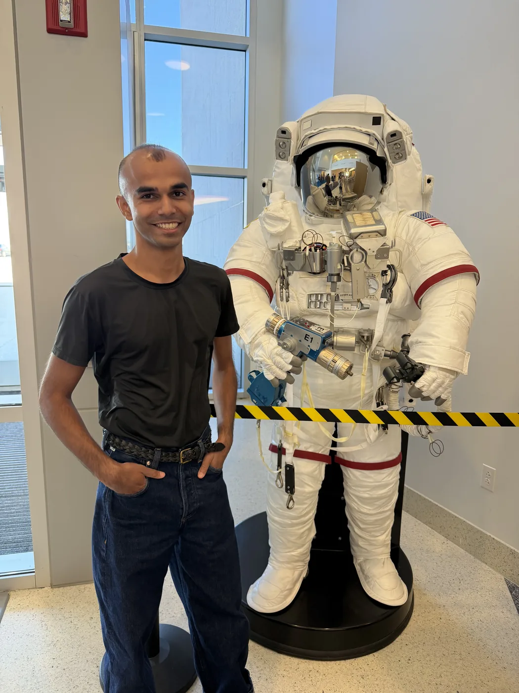
photo unavailable'">The Problem
Which risks will hurt the most, and by how much?
Teams and project managers need to know which risks in their project will matter most to cost and schedule, and they need to know it early enough to act decisively and mitigate them.
The Response
A method that names the risks that matter, and a picture that shows why.
I built a method that points out the most consequential risks, and an intuitive graph that communicates both the consequences and the risks driving them.
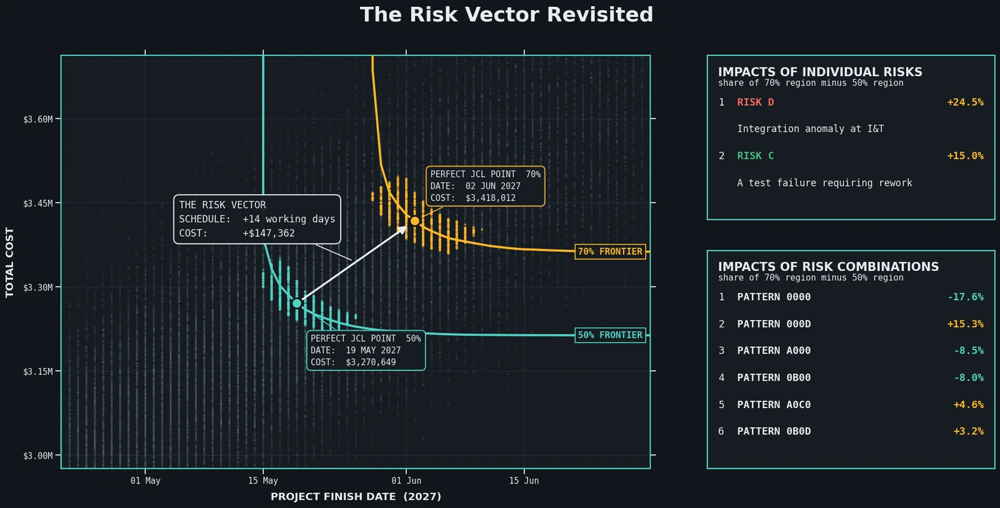
figure unavailable'">The Method
How it works, step by step.
The rest of this page builds the method step by step, on a worked example anyone can follow.
- Framework
- NASA Cost Estimating Handbook v4.0, with substitutions
- Worked example
- Archimedes' sun-laser: two subsystems, four risks, 140 simulated outcomes
The worked example is illustrative, not real programme data. The method came out of my work at NASA's Kennedy Space Center.
The question someone else asked first
Louis Fussell, 2024
At the 2024 NASA Cost and Schedule Symposium, Louis Fussell presented on the standardization of Joint Confidence Level (JCL) value selection. A JCL model describes the possible cost and schedule outcomes of a project through a Monte Carlo simulation built on initial schedule assumptions. Louis wanted to develop a confidence interval around the perfect JCL point. He wanted it for a good reason: to tie the JCL back to discussions about project risks.
That is the right instinct, and this work follows it. Where it ends up is somewhere other than a confidence interval, for reasons that take until the fourth section to become clear.
Archimedes' sun-laser
two subsystems, four risks, one cost-loaded schedule
Archimedes is a mathematician in Syracuse, Sicily. Roman ships are headed to besiege the city, and he is going to build a sun-laser to defend it. The project has two subsystems: mirrors to focus the sun's rays, and a frame to move them.
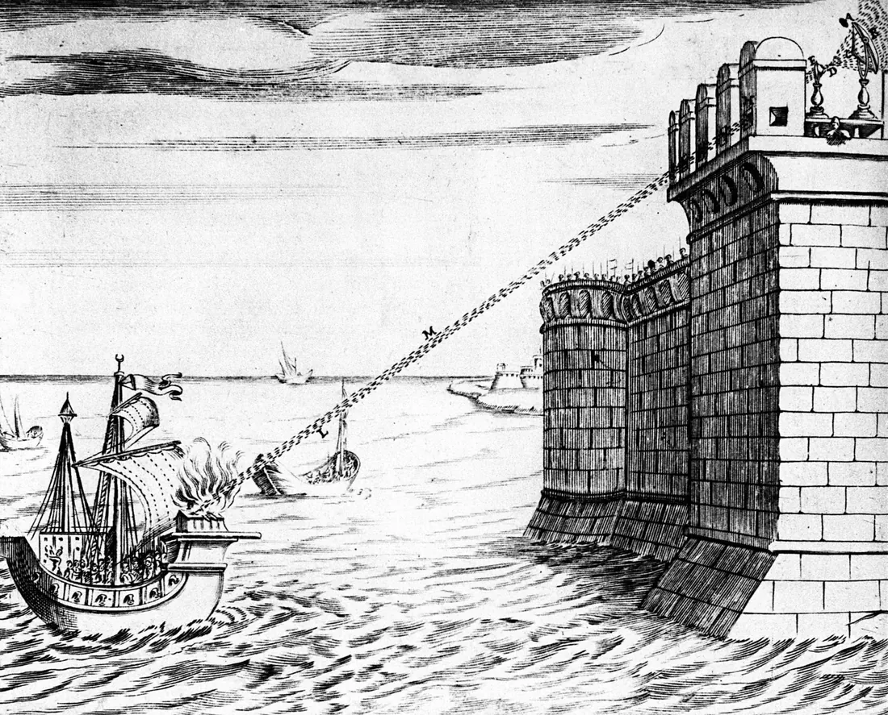
figure unavailable'">Design, build and test for each subsystem, then system integration and test. The schedule is loaded with costs, with three-point uncertainty on every task, and with four discrete risks. Two substitutions from the NASA Cost Estimating Handbook (CEH) baseline are worth naming: uncertainties are lognormal rather than triangular, and risks are modelled as schedule events carrying a probability below 1 rather than as cost reserves.
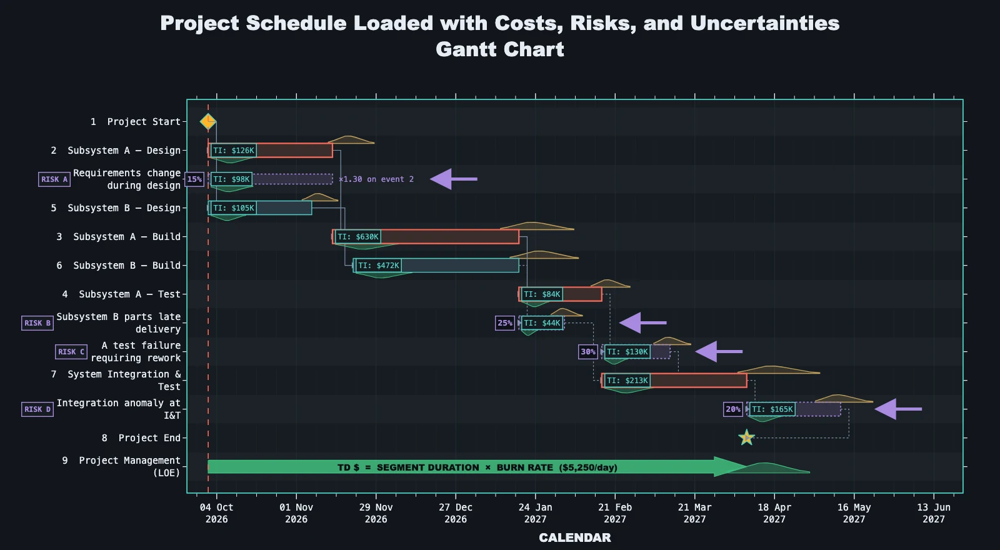
figure unavailable'">| Risk | Event | Probability | Cost impact |
|---|---|---|---|
A | Requirements change during design | 15% | $98K |
B | Subsystem B parts late delivery | 25% | $44K |
C | A test failure requiring rework | 30% | $130K |
D | Integration anomaly at integration and test (I&T) | 20% | $165K |
Run the Monte Carlo simulation
every iteration is one possible world
Each iteration samples a duration for every task, decides whether each risk fires, and resolves the schedule to a finish date and a total cost. Thousands of iterations make a cloud, and the cloud is the JCL.
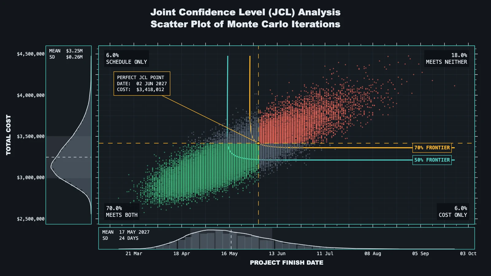
figure unavailable'">That single number, 70%, is where a conventional JCL analysis stops. It is also where the manager's real question starts: what would it take to be somewhere else on this cloud, and what is holding us here?
Flexible thinking
the devil's in the details
Fussell's proposal was a confidence interval around the JCL point. Working through it, the idea runs into something that cannot be negotiated away.
Confidence intervals are statistical objects.
JCL distributions are probabilistic constructs.
The Monte Carlo cloud is not a sample drawn from a population; it is a simulated distribution generated from assumptions. There is no parameter out in the world that the cloud is estimating, so there is nothing for a confidence interval to be about. Adding more iterations does not narrow the interval. It just resolves the cloud.
So the honest answer to Louis's question is that the object he asked for cannot exist. The useful answer is to ask what he actually wanted it for: tying the JCL back to risk. That survives the objection intact.
A new data table
record which risks fired, iteration by iteration
The move is cheap and it happens while the simulation is already running. Alongside each
iteration's cost and finish date, record the risks that fired in it: the individual risks
(A, B, C, D) and the combination as a
pattern (A0C0 means A and C fired, B and D did not).
Every point in the scatter plot now carries its own causal history. Which means that instead of asking for statistics about a parameter, we can report descriptive statistics for selected regions of the JCL, and read off the risk profiles that drive project performance to those cost and schedule levels.
Confidence intervals are statistical objects.
JCL distributions are probabilistic constructs.
We can report the statistics of targeted regions.
Choosing regions of the JCL to compare
two points, three candidate geometries, one that works
Start by choosing two points on the JCL scatter plot to compare, and build the regions around them. Here they are the perfect JCL points at the 70% and 50% confidence levels, the two options a manager is realistically weighing.
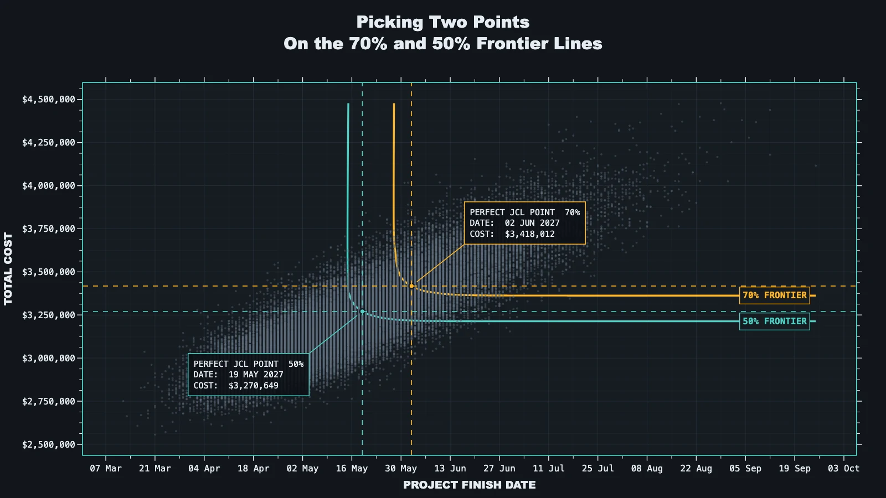
figure unavailable'">A single point has no statistics; a region does. But a region has to be drawn, and how you draw it decides whether the comparison means anything. Three candidates, in the order they suggest themselves:
Confidence level bands
70%: 1,655 pts · 50%: 1,757 pts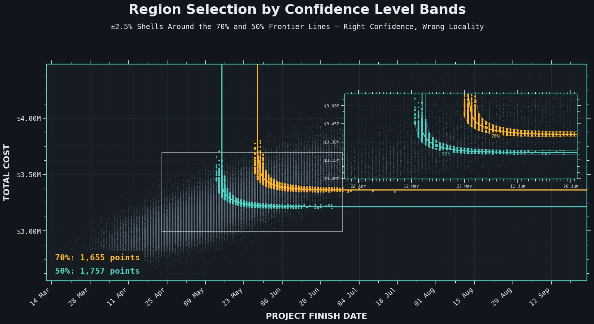
figure unavailable'">Elliptical neighbourhoods
70%: 6,403 pts · 50%: 9,130 pts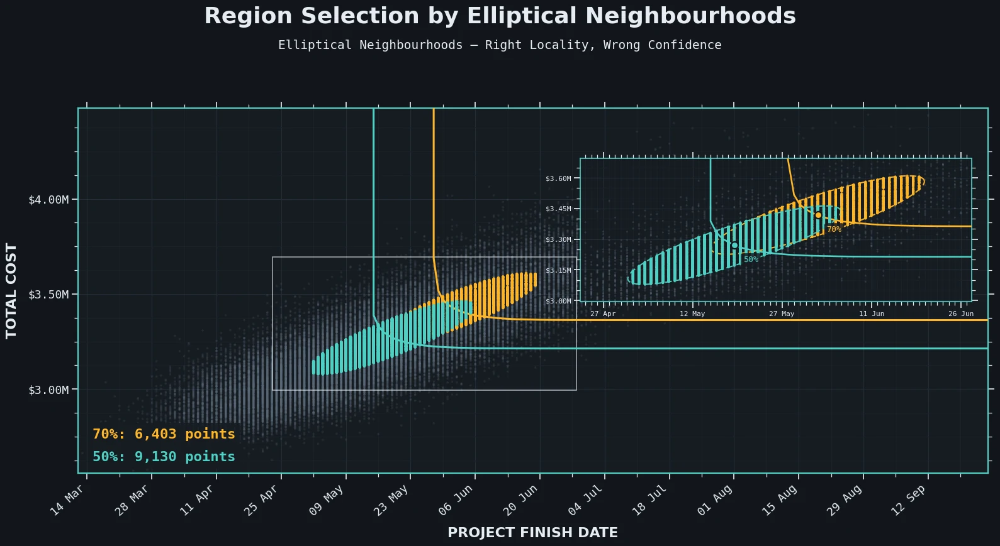
figure unavailable'">The intersection: the best of both worlds
70%: 920 pts · 50%: 935 pts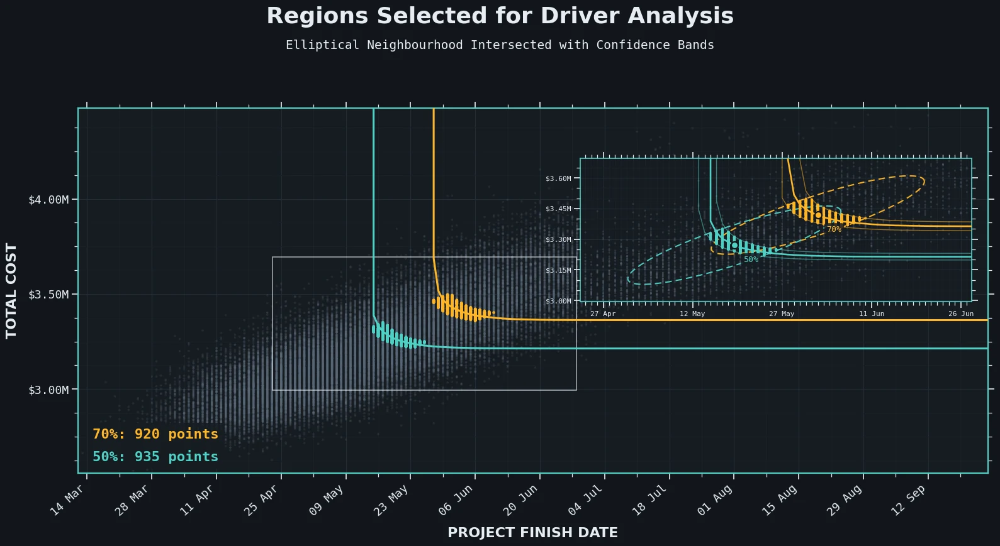
figure unavailable'">The risk vector
we have the difference; we need to know what drives it
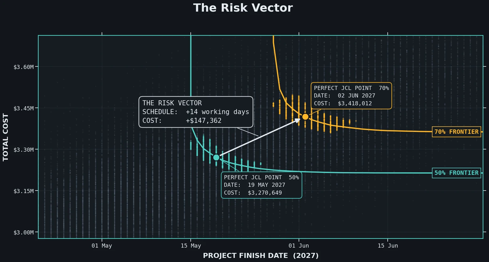
figure unavailable'">The vector states the cost of the upgrade in the only units a manager cares about. What it does not say is what you are buying protection from. Since every point in both regions now carries the list of risks that fired in it, that question has an answer.
The measure is simple: for each risk, what share of the 70% region has it lit, and what share of the 50% region? The difference between those two shares is how much that risk separates the two confidence levels.
Visualizing the impact of the risks
individually, then in chains
Individual risks
This is how the ranking at the top of the page is produced.
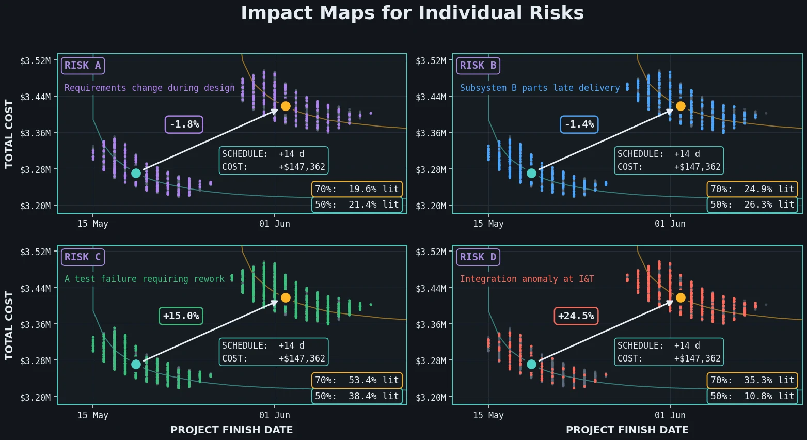
figure unavailable'">| Rank | Risk | Event | 70% lit | 50% lit | Difference |
|---|---|---|---|---|---|
| 1 | D | Integration anomaly at I&T | 35.3% | 10.8% | +24.5% |
| 2 | C | A test failure requiring rework | 53.4% | 38.4% | +15.0% |
| 3 | A | Requirements change during design | 19.6% | 21.4% | −1.8% |
| 4 | B | Subsystem B parts late delivery | 24.9% | 26.3% | −1.4% |
Amber: more common in the 70% region. Green: more common in the 50% region.
Chains of risk
The same treatment applies to combinations. We can see how each risk combination contributes to changes in cost and schedule, and prioritize which chains of risk need managing.
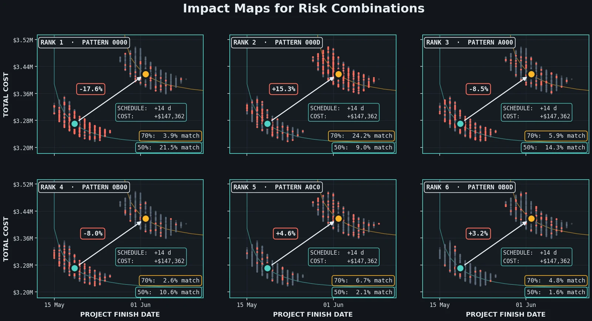
figure unavailable'">0000 is the pattern where no risk fires at all; 000D is D alone;
A0C0 is A and C together.| Rank | Pattern | Meaning | 70% match | 50% match | Difference |
|---|---|---|---|---|---|
| 1 | 0000 | No risk fires | 3.9% | 21.5% | −17.6% |
| 2 | 000D | D alone | 24.2% | 9.0% | +15.3% |
| 3 | A000 | A alone | 5.9% | 14.3% | −8.5% |
| 4 | 0B00 | B alone | 2.6% | 10.6% | −8.0% |
| 5 | A0C0 | A and C together | 6.7% | 2.1% | +4.6% |
| 6 | 0B0D | B and D together | 4.8% | 1.6% | +3.2% |
Amber: more common in the 70% region. Green: more common in the 50% region.
The top of this list is the clean-run pattern, and it points the other way: a project that lands at 50% confidence is more than five times as likely to have had nothing go wrong as one that lands at 70%. Read together with rank 2, the story is a single sentence: the 70% region is where the integration anomaly fires and the project absorbs it, and the 50% region is where the project needed a clean run to get there.
The risk vector revisited
A simple way to summarize which risks drove the difference between the two regions.
Archimedes finished his sun-laser ahead of schedule and under budget, and turned his attention to moving the Earth with a lever and a fulcrum.
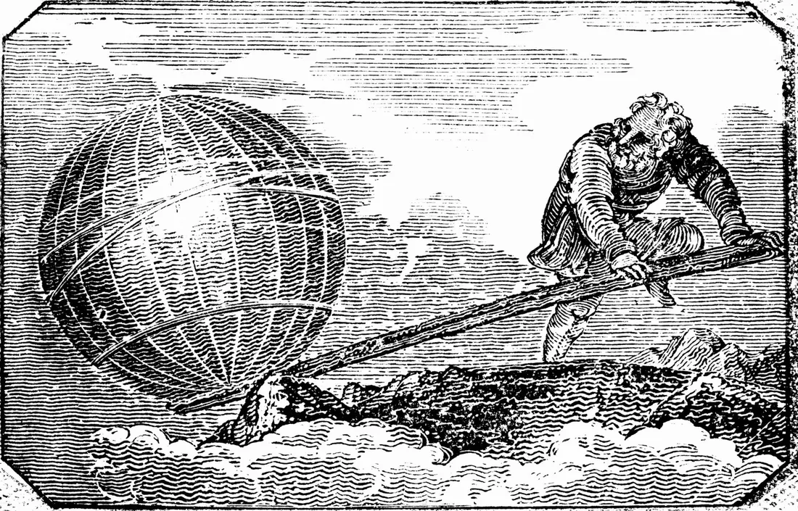
figure unavailable'">References
the framework, and the question that started it
- Framework National Aeronautics and Space Administration. (2015). NASA Cost Estimating Handbook (Version 4.0). NASA Headquarters.
- Premise Fussell, Louis (2024, April 23). Standardization of JCL value selection [Conference presentation]. 2024 NASA Cost and Schedule Symposium, Hampton, VA, United States.
Need to know which risks to act on before they cost you?
Bring me the decision in front of you. I will show you which risks decide the outcome, and where your budget and schedule buy the most protection.
Start a conversation